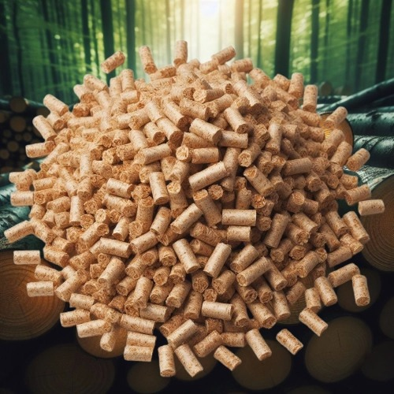

Dřevěné pelety
Certifikované pelety plnící normu ČSN EN A1 s vysokou výhřevností, nízkou popelnatostí. V současné době nabízíme pelety 6 mm Extra Premium Pellets největšího českého výrobce StoraEnso.
Certifikované pelety plnící normu ČSN EN A1 s vysokou výhřevností, nízkou popelnatostí. V současné době nabízíme pelety 6 mm Extra Premium Pellets největšího českého výrobce StoraEnso.
Ekologické palivo vyrobené z lisovaných pilin a hoblin z bukového dřeva bez kůry a pojiv. Vyznačují se vysokou výhřevností, dlouhou dobou hoření, nízkým obsahem popela a příjemnou vůní. Díky 100% čistotě jsou vhodné nejen pro kamna, kotle a krby, ale i pro grilování a uzení.

Dřevěná polínka o délce 33 cm jsou určena pro topení v krbech a kamnech na dřevo. Mohou být použita i pro táborové ohně a grilování. Pokud jsou polínka rovnaná v dřevěných klecích jako na obrázku, je celkový objem dřevní hmoty větší o cca. 60% na rozdíl od polínek sypaných na hromadě. Nabízíme smrk, břízu nebo mix ze dřeva tvrdých listnatých stromů. Po dohodě lze dodat sušší dřevo pro okamžité spotřebování.
Odřezky z pily představují variantu ekonomicky výhodného paliva vhodného do krbů, kotlů a kamen. Jedná se o nejčastěji smrkové krajiny spáskované do balíků o průměru cca 1m v délkách od 3 do 5m nebo vyrovnané do stohů 2x1x1 m jako na obrázku. Vzhledem k obtížné manipulaci a dopravě (jeden balík váží od 800 do 1500kg) je cena kalkulována rovnou s dopravou a složením.
Velmi čistá smrková štěpka vyrobená z odkorněných kmenů bez příměsí jehličí nebo listí. Vhodná jako palivo, záhonový zásyp nebo stelivo. Štěpku dodáváme v použitých velkoobjemových vacích nebo rašlových pytlech o objemech 90, 600, 800 nebo 1000 litrů.